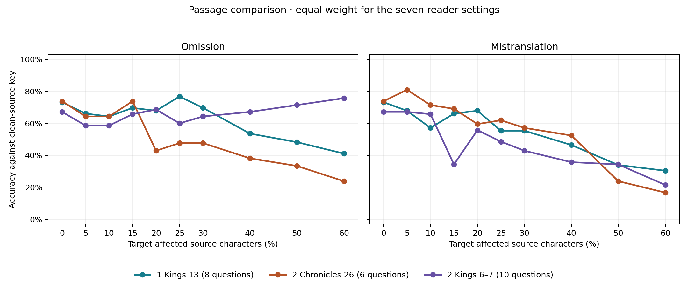
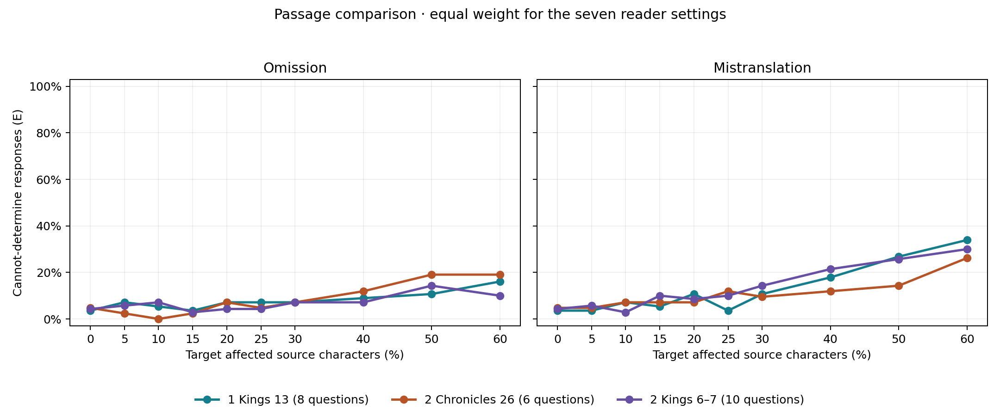

24 distinct questions · 7 reader settings · 3,192 responses including clean baselines.
Accuracy uses each question’s clean-source answer key. A defective passage may remove or contradict its evidence. E (无法判断) and invalid responses are included in the accuracy denominator and are reported separately below. The clean baseline is shared between the two panels.


Doses are percentages of affected clean Chinese content characters, with ±2 percentage-point tolerance. Versions from 30–60% are nested; those from 5–25% need not be. Consequently, low-dose fluctuations can reflect which evidence was changed as well as dose. Each cell has one generation per question and reader setting.
Each cell: correct / wrong A–D / E / invalid, followed by accuracy.
| Target dose | 1 Kings 13 56 responses per dose | 2 Chronicles 26 42 responses per dose | 2 Kings 6–7 70 responses per dose |
|---|---|---|---|
| Clean | 41 / 13 / 2 / 0 73.2% | 31 / 9 / 2 / 0 73.8% | 47 / 20 / 3 / 0 67.1% |
| 5% | 37 / 15 / 4 / 0 66.1% | 27 / 14 / 1 / 0 64.3% | 41 / 25 / 4 / 0 58.6% |
| 10% | 36 / 17 / 3 / 0 64.3% | 27 / 15 / 0 / 0 64.3% | 41 / 24 / 5 / 0 58.6% |
| 15% | 39 / 15 / 2 / 0 69.6% | 31 / 10 / 1 / 0 73.8% | 46 / 22 / 2 / 0 65.7% |
| 20% | 38 / 14 / 4 / 0 67.9% | 18 / 21 / 3 / 0 42.9% | 48 / 19 / 3 / 0 68.6% |
| 25% | 43 / 9 / 4 / 0 76.8% | 20 / 20 / 2 / 0 47.6% | 42 / 25 / 3 / 0 60.0% |
| 30% | 39 / 12 / 4 / 1 69.6% | 20 / 19 / 3 / 0 47.6% | 45 / 20 / 5 / 0 64.3% |
| 40% | 30 / 21 / 5 / 0 53.6% | 16 / 21 / 5 / 0 38.1% | 47 / 18 / 5 / 0 67.1% |
| 50% | 27 / 23 / 6 / 0 48.2% | 14 / 20 / 8 / 0 33.3% | 50 / 10 / 10 / 0 71.4% |
| 60% | 23 / 24 / 9 / 0 41.1% | 10 / 24 / 8 / 0 23.8% | 53 / 10 / 7 / 0 75.7% |
Each cell: correct / wrong A–D / E / invalid, followed by accuracy.
| Target dose | 1 Kings 13 56 responses per dose | 2 Chronicles 26 42 responses per dose | 2 Kings 6–7 70 responses per dose |
|---|---|---|---|
| Clean | 41 / 13 / 2 / 0 73.2% | 31 / 9 / 2 / 0 73.8% | 47 / 20 / 3 / 0 67.1% |
| 5% | 38 / 16 / 2 / 0 67.9% | 34 / 6 / 2 / 0 81.0% | 47 / 19 / 4 / 0 67.1% |
| 10% | 32 / 20 / 4 / 0 57.1% | 30 / 9 / 3 / 0 71.4% | 46 / 22 / 2 / 0 65.7% |
| 15% | 37 / 16 / 3 / 0 66.1% | 29 / 10 / 3 / 0 69.0% | 24 / 39 / 7 / 0 34.3% |
| 20% | 38 / 12 / 6 / 0 67.9% | 25 / 14 / 3 / 0 59.5% | 39 / 25 / 6 / 0 55.7% |
| 25% | 31 / 23 / 2 / 0 55.4% | 26 / 11 / 5 / 0 61.9% | 34 / 29 / 7 / 0 48.6% |
| 30% | 31 / 19 / 6 / 0 55.4% | 24 / 14 / 4 / 0 57.1% | 30 / 30 / 10 / 0 42.9% |
| 40% | 26 / 20 / 10 / 0 46.4% | 22 / 15 / 5 / 0 52.4% | 25 / 30 / 15 / 0 35.7% |
| 50% | 19 / 22 / 15 / 0 33.9% | 10 / 26 / 6 / 0 23.8% | 24 / 28 / 18 / 0 34.3% |
| 60% | 17 / 20 / 19 / 0 30.4% | 7 / 24 / 11 / 0 16.7% | 15 / 34 / 21 / 0 21.4% |
Mapped E choices are distinguished from a reader directly selecting E. Reaching the token limit does not automatically mean an invalid answer.
| Passage | Mapped choices | Mapped E | Invalid | Token limit reached |
|---|---|---|---|---|
| 1 Kings 13 | 21 | 13 | 1 | 1 |
| 2 Chronicles 26 | 15 | 6 | 0 | 0 |
| 2 Kings 6–7 | 60 | 42 | 0 | 0 |
The original two reader-prompt/parser families are preserved. Unmatched nonempty responses from the four primary reader settings use GPT-4.1-mini to map the response to an option, using only the response and choices. Empty responses remain invalid. All readers use temperature 0, an 8,192-token context, and a 2,500-token generation cap; thinking uses that cap.